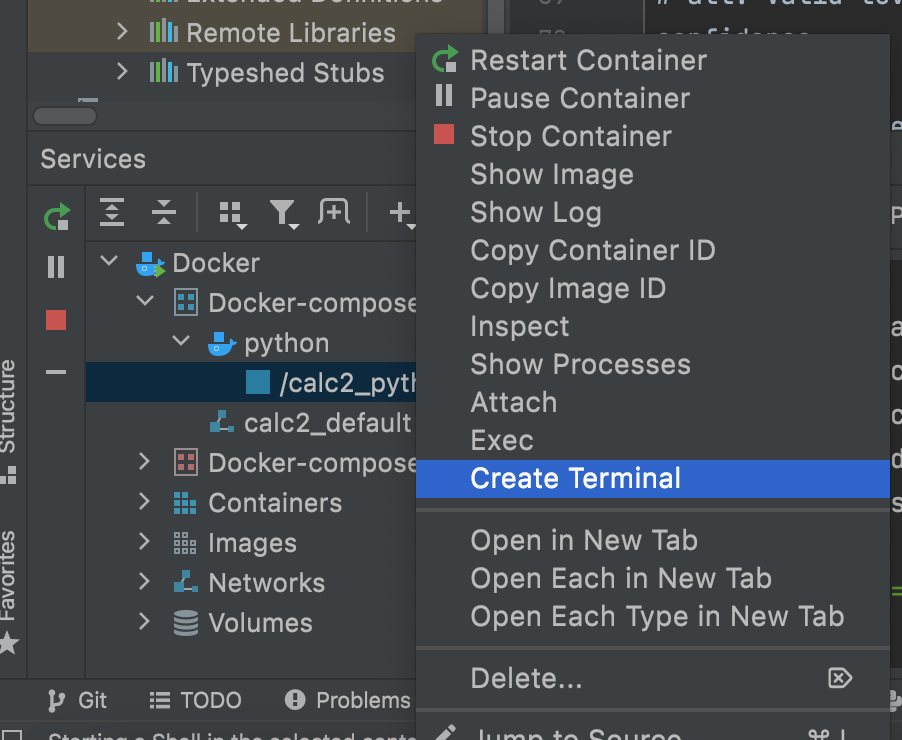
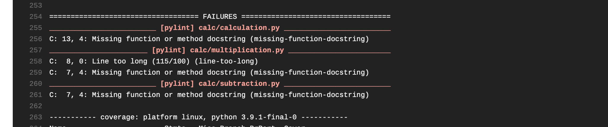

Pylint is a source code, bug and quality checker for the Python. 'Py' is named following a common convention in python, and a nod to the C programming 'lint' program
Pylint can be your tour guide that reveals what is going on behind the scenes and helps you to aware programming. Pylint is a tool used for to check for errors in Python code, meaning it can analyze the code without actually running it. Sharing a code is a rewarding thing to do.Whether you put your code in a public platform, your intention may not be desired outcome if people find your code hard to understand and that is why the python community has discovered the programming styles to help everyone write code in a common which makes more sense.
Before we go the Pylint tutorial, Let's learn the Object-Oriented Programming terms :-
is a creational design pattern which solves the problem of creating product objects without specifying their concrete classes
is a creating a copy of the class which inherits all class variables and methods
is simply a collection of data (variables) and methods (functions) that act on those data.
is a code template for creating objects.
is a system that has a unique name for each and every object in Python
is to initialize(assign values) to the data members of the class when an object of the class is created. For instance , __init__() method is constructor.
is used to feed some data to the tests such as database connections, URLs to test and some sort of input data.
is a formal solution to statically indicate the type of a value within your Python code.
is the method to convert the variable data type into a certain data type in order to the operation required to be performed by users.
software testing method by which individual units of source code are put under various tests to determine whether they are fit for use.
Static methods in Python are extremely similar to python class level methods, the difference being that a static method is bound to a class rather than the objects for that class.
is a method which is bound to the class and not the object of the class.They have the access to the state of the class as it takes a class parameter that points to the class and not the object instance
is a structural design pattern that provides a simplified (but limited) interface to a complex system of classes, library or framework.
provide the general repeatable solution to a commonly occurring problem in software design. They usually represent some of the best practices adopted by experienced object-oriented software developers
are associated with the objects of the class they belong to.
Provides an interface to instance attributes. It encapsulates instance attributes and provides a property,
Let's Install Pylint before we begin:
Pylint should be easily installed in terminal
pip install pylint
We'll use a basic Python script from a calculator project for our tutorial. Clone the project and Open the folder in Pycharm
Run the configuration with the docker compose file and in the python container under services tab , hit create terminal. Just like the picture shown below:
In the Terminal, type pytest where it will show the errors. Testing your code brings a
wide variety of benefits. It increases your confidence that the code behaves as you expect
and ensures that changes to your code won’t cause regressions. Writing and maintaining tests
is hard work, so you should leverage all the tools at your disposal to make it as painless as
possible.
Before we test the file, let's learn more keywords of the output :
| Pylint category | Description |
|---|---|
| Informational (I) | messages that Pylint emits (do not contribute to your analysis score |
| Convention (C) | Programming standard violation |
| Refactor (R) | Bad code smell |
| Warning (W) | Python-specific problems |
| Error (E) | Likely code bugs |
| Fatal (F) | An error prevented further Pylint processing |
Pylint returns bit-encoded exit codes. If applicable, the table below lists the related stderr stream message output.
| Exit Codes | Description | Message |
|---|---|---|
| 0 | no error | |
| 1 | fatal message issued | |
| 2 | error message issued | |
| 4 | warning message issued | |
| 8 | refactor message issued | |
| 16 | convention message issued | |
| 32 | usage error | "internal error while receiving resultsfrom child linter" "Error occurred, stopping the linter." return of linter.help()>" "Jobs number <#> should be greater than 0" "IOError message when trying to open output file>" |
To know more about Pylint-errors , Check on this website
Below shows the image of the error
 As you can see in the image, that we have some error in our files, to avoid this error , simply,type
# pylint : disable=missing-function-docstring at the top of the page of your file and this is what your output will show:
Pylint is a tool that checks for errors in Python code, tries to enforce a coding standard and looks for code smells. It can also look for certain type errors, it can recommend suggestions about how particular blocks can be refactored and can offer you details about the code's complexity.